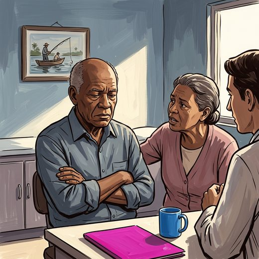

Consulta rápida à beira do leito
Condutas, doses e interações.
Referências da aula · 9
- Muñoz FL, da Cruz RF, Silveira LVA, Diaz MDP. Latent dimension of comorbidities and depression in older adults: a cross-sectional study using National Health Survey data, Brazil, 2019. Epidemiol Serv Saude. 2026;35:e20250722. doi:10.1590/S2237-96222026v35e20250722.pt.DOI
- Alexopoulos GS. Depression in the elderly. Lancet. 2005;365(9475):1961-70. PMID 15936426. doi:10.1016/S0140-6736(05)66665-2.PubMedDOI
- Alexopoulos GS, Meyers BS, Young RC, Campbell S, Silbersweig D, Charlson M. 'Vascular depression' hypothesis. Arch Gen Psychiatry. 1997;54(10):915-22. PMID 9337771. doi:10.1001/archpsyc.1997.01830220033006.PubMedDOI
- Aziz R, Steffens DC. What are the causes of late-life depression? Psychiatr Clin North Am. 2013;36(4):497-516. PMID 24229653. doi:10.1016/j.psc.2013.08.001.PubMedDOI
- Diniz BS, Butters MA, Albert SM, Dew MA, Reynolds CF 3rd. Late-life depression and risk of vascular dementia and Alzheimer's disease: systematic review and meta-analysis of community-based cohort studies. Br J Psychiatry. 2013;202(5):329-35. PMID 23637108. doi:10.1192/bjp.bp.112.118307.PubMedDOI
- Fiske A, Wetherell JL, Gatz M. Depression in older adults. Annu Rev Clin Psychol. 2009;5:363-89. PMID 19327033. doi:10.1146/annurev.clinpsy.032408.153621.PubMedDOI
- Kok RM, Reynolds CF 3rd. Management of depression in older adults: a review. JAMA. 2017;317(20):2114-22. PMID 28535241. doi:10.1001/jama.2017.5706.PubMedDOI
- Taylor WD. Depression in the elderly. N Engl J Med. 2014;371(13):1228-36. PMID 25251617. doi:10.1056/NEJMcp1402180.PubMedDOI
- American Psychiatric Association. Diagnostic and Statistical Manual of Mental Disorders, Fifth Edition, Text Revision (DSM-5-TR). Washington, DC: American Psychiatric Association Publishing; 2022.